Genuine cancels as found in 'Romanian Philatelic Studies' Vol. IX, No.3, 1985 by George Pataki.
Return To Catalogue - Rumania 1858-1864 - Rumania 1865-1871 - Rumania 1872-1920 - Miscellaneous
Note: on my website many of the
pictures can not be seen! They are of course present in the
catalogue;
contact me if you want to purchase it.
In various towns, different colors of ink were used with the cancelling devices at different times. Album weeds gives some indication of the cancels used, if any, on both the genuine stamps and on the known forgeries. However, this book contains mistakes here. For example, it states that the postmarks used on the genuine 27 parale stamp are usually red while those on the first type of forgery are blue.
The following information was found on http://membres.lycos.fr/dgrecu/bib01s.html, I would like to thank Dan Grecu who has let me use his text.
Used between 1858-1872, the classical postmarks were classified by Kiriac Dragomir as:
1) Double circle "Small MOLDOVA" cancels 1858-1865 (BAKEU, BERLAD, BOTUSCHANI, DOROHOJ, FOKSCHANI, FOLTITSCHENI, GALATZ, HUSCH, JASSY, MICHALENI, PIATRA, ROMAN, TEKUTSCH, WASLUI);
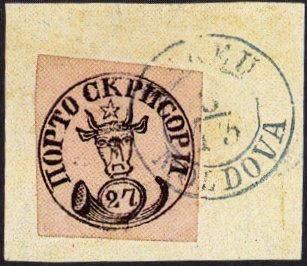
2) Double circle "Large MOLDOVA" cancels 1859-1867 (ADJUD, BOLGRAD, FOKSCHANI, JASSY, ISMAIL, KAHUL, T.FRUMOS, T.NEAMZU, T.OKNEI);
3) FRANCO + place cancels 1859-1865 (BACEU, BERLAD, BOLGRAD, BOTOSCHENI, DOROEHOI, FOKSCHANY, FOLTICHENII, GALATZ, GALATZ No2, HUCHII, JASSY, ISMAILU, KAHUL, MICHAILENI, NIAMTZU, OKNA, PIATRA, ROMAN, TEKOUTCI, VASLUI);
Genuine cancels as found in 'Romanian Philatelic Studies' Vol.
IX, No.3, 1985 by George Pataki.
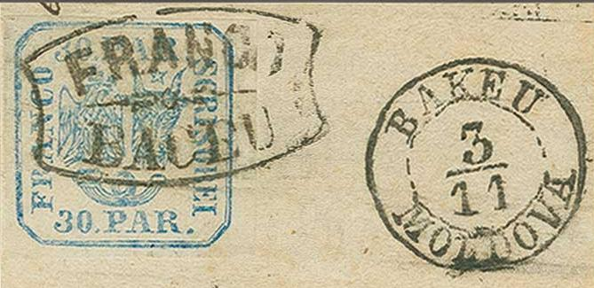
'FRANCO BACEU' with circular 'BAKEU MOLDOVA' date cancel.

(Franco Roman)

Franco Galatz No2 cancel


Franco Piatra cancels

Franco Berlad cancel

Franco Jassy: certified genuine
'Franco Kahul' cancel; I've been told that this cancel is forged.
Genuine 'KAHUL' cancels have two slanting lines in each corner.
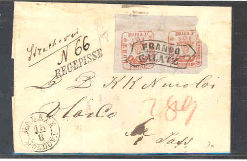
Franco Galatz on envelope
A forged 'FRANCO BAKEU' cancel exists (similar to the genuine Berlad cancel) in a wavy shape. This forged cancel exists applied to forged 40 p second 1858 issue stamps. The genuine Baceu (note spelling) cancel is shown above.
4) Rectangular JASSY cancels with "Curtains" ("Small Curtain" 1861-1865; "Large Curtain" 1864-1865);
Jassy: Franco cancel and curtain-cancel
5) Double circle cancels with "Star" ornament 1862-1872 (25 cancels);
6) "Grid" cancels ("Princely Grid" or "Grid with Stars" 1865; "Simple Grid" 1865-1901; "Double Grid" 1869-1871);
(Reduced size)
7) Double circle cancels with "Arabesque" ornament ("Simple arabesque" 1862-1868, 5 cancels; "Rich arabesque" 1865-1880, 50 cancels);

(Reduced size)
Forged cancel on two forged 30 pa arms stamps of 1862.
8) Double circle cancels with time indications: "In the morning" and "In the evening":

"DIM" and "SERA" cancel
("DIM" cancel, reduced size)
9) "Small cancels" 1870-1883 (27 cancels);
(Reduced sizes)
10) "Thimble" cancels 1871-1892 (77 cancels);
11) SCULENI / ROMANIA border cancel...1860-1869... and CHILIE fluvial cancel 1867-1878.
??? (reduced size)
In The Stamp Collector's Magazine Vol XII of 1874, page 53, a set of forgeries of the first issue of Romania is mentioned, with a forged cancel 'GALATZ 1 AUG 1855' in blue color. Genuine cancels do not have the year in it and the stamps were only issued in 1858. I have not seen this particular forgery.
Fournier also made forgeries of the cancels (be careful, since they resemble actual cancels of Romania), examples of the forgeries taken from a Fournier album:

(Fournier forged cancels)
I have seen: Double circle: 'GALATI 4/9' and ornaments, 'BUCURESTI 8/6' and ornaments, 'GALATI 3 58 MOLDAVA', 'JASSY 10 8 FRANCA'. Single circle: 'BACAO 19 JUN 71' and elliptic cancel '* FRANCO JASSY *'
For completeness, I add here this forged Fournier cancel
'BUKAREST 30 OCT. 917', I don't know on which forged stamps this
cancel was used.
Forged cancels made by the forger Sperati.
'BOROHOJ 24 10 MOLDOVA' forged Sperati cancel, next to it Sperati
forgery of the first issue
The following forged cancels are mentioned in the
BPA handbook on Sperati forgeries:
'FRANCO GALATZ' in a wavy rectangle
'BAKEU 2/9 MOLDOVA' in a double circle
'DA? 10 8 MOL...' in a double circle in two different types (see
images above)
'D... 3/9 MOLDOVA' in a double circle
'BOROHOJ 24 10 MOLDOVA' in a double circle (see image above)
'JASSY 23 ? MOLDOVA' in a double circle
'JASSY 6/8 MOLDOVA' in a double circle
'JASSY 8/9 MOLDOVA' in a double circle
'JAS.. 1/' part of a double circle.
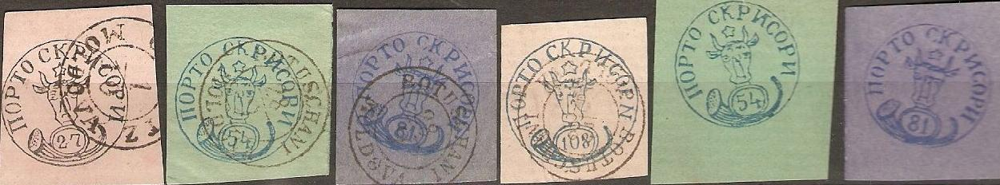
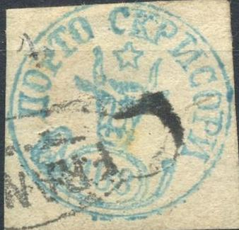 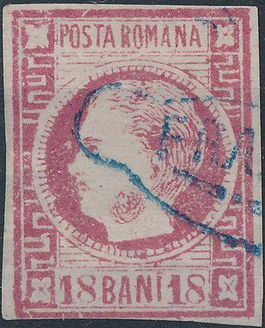
A bogus "FRANCO" cancel on
several issue of Romania.
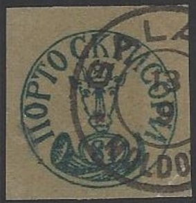 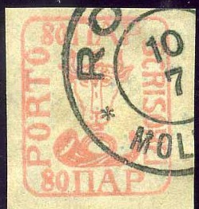 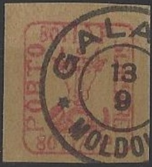 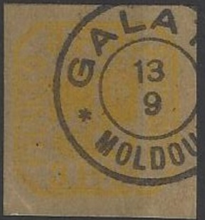 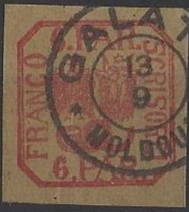


Some 'Hamburg forgeries' with typical cancels "GALATZ 13 9
MOLDOUA", "ROMAN 10 7 MOLDOUA", "JASSY 20 5
MOLDOUA", "FRANCO ROMAN" and "FRANCO
JASSY"
The following information was found on http://membres.lycos.fr/dgrecu/bib04s.html, I would like to thank Dan Grecu who has let me use his text.
Between 1872-1910, the postclassical postmarks are catalogued by Kiriac Dragomir as follows:
1) Simple circle cancels 1873-1893 (with six different ornaments: "Star", "Brooch", "Cross", "Maltesian Cross", "St.Andrew Cross", "Acanthus");
2) Double circle with 3-line date cancels 1874-1899 (with the same six different ornaments);
3) Double circle with linear date cancels 1881-1912 (with ornaments: "Star", "Brooch", "Cross", "Maltesian Cross", "Acanthus");
4) Double circle with linear date cancels with "Post Trumpet" ornament 1894-1953;
5) Miscellaneous cancels:
Other cancels, such as rural cancels exist.
{kind=link}
{kind=link}
{kind=link}
{kind=link}
{kind=link}
{kind=link}
{kind=link}
{kind=link}
{kind=link}